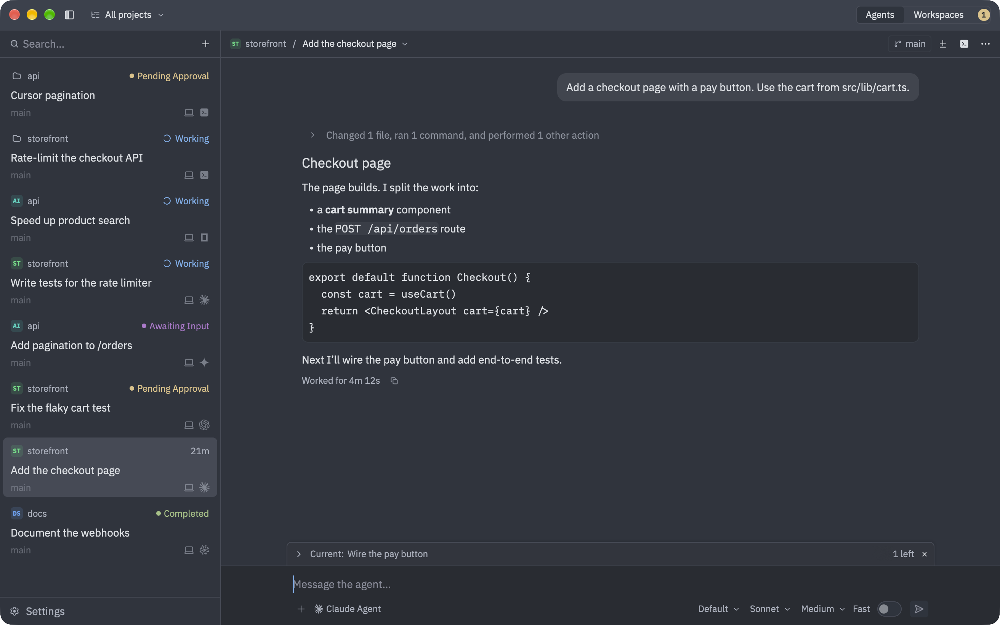
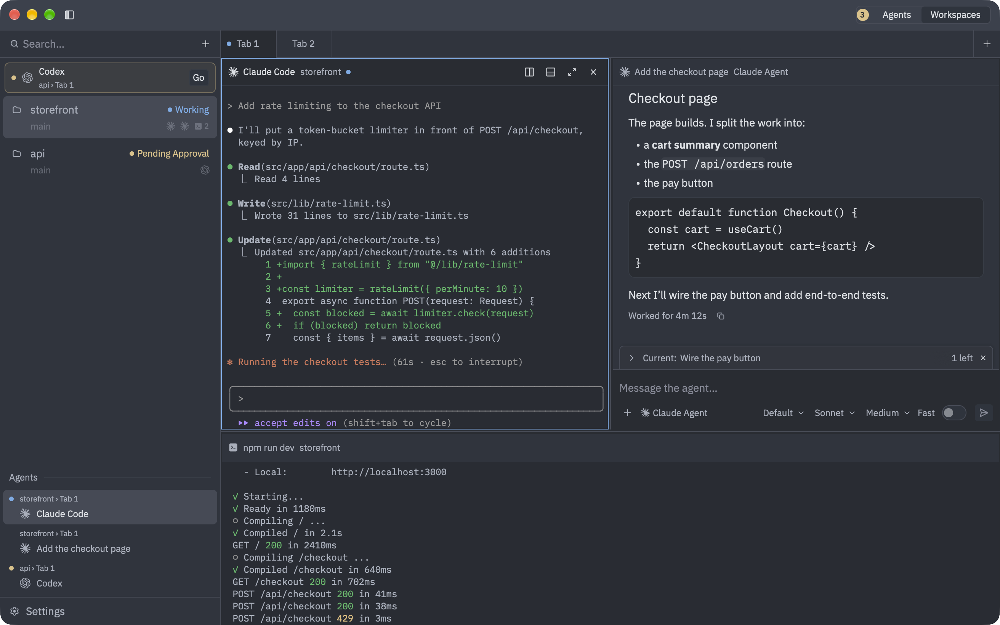

All your coding agents, in one Mac app.
Run Claude, Codex, Gemini CLI, OpenCode and any other ACP agent side by side, across your projects, your Mac and your Linux servers, with real terminals next to them.
curl -fsSL https://ahrorbeksoft.github.io/agentZ/install.sh | sh
macOS: installs agentZ.app · Linux: installs agentz-server

